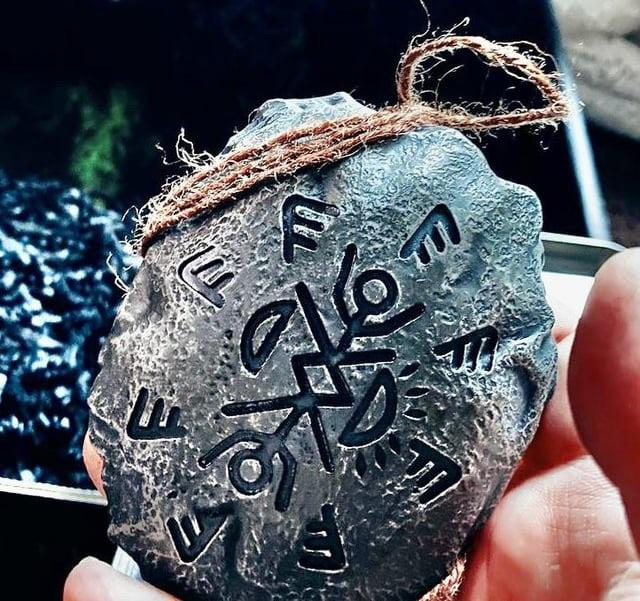

Найпопулярніші версії фанатів
Серіал породжує безліч запитань. Ми зібрали 4 найцікавіші теорії про те, де знаходяться герої.
Експеримент у часі
Згідно з цією версією, місто — це закритий полігон для тестування технологій викривлення простору. Можливо, герої перебувають у 1950-х роках, які були "заморожені" або відтворені штучно.
- Електрика працює без дротів.
- Монстри вбрані у стилі минулого століття.
- Їжа з'являється нізвідки.
Чистилище
Класична теорія для подібних серіалів. Вважається, що всі мешканці потрапили в аварію (згадайте повалене дерево) і зараз знаходяться між життям та смертю.
- Кожен бачить свої минулі гріхи.
- Місто "випробовує" їх на людяність.
- Вихід можливий лише через "смерть" у цьому світі (як це зробила Табіта).
Давнє прокляття лісу
Теорія базується на фольклорі. Ліс — це живий організм або в'язниця для давньої сутності. Талісмани — це руни, які стримують зло, але воно постійно еволюціонує.
- Слово "Анкойя" як заклинання.
- Малюнки Віктора як передбачення.
- Дерева-портали, що переміщують людей.
Комп'ютерна симуляція
Джейд (геній програмування) неодноразово натякав на нелогічність фізики міста. Можливо, це гра або симуляція, де кожен герой — це "гравець", а монстри — це баги або системні очисники.

Таємниця талісманів
Бойд знайшов їх у печері, але хто їх там залишив? Деякі фанати вважають, що талісмани працюють не через магію, а через віру мешканців у їхній захист.